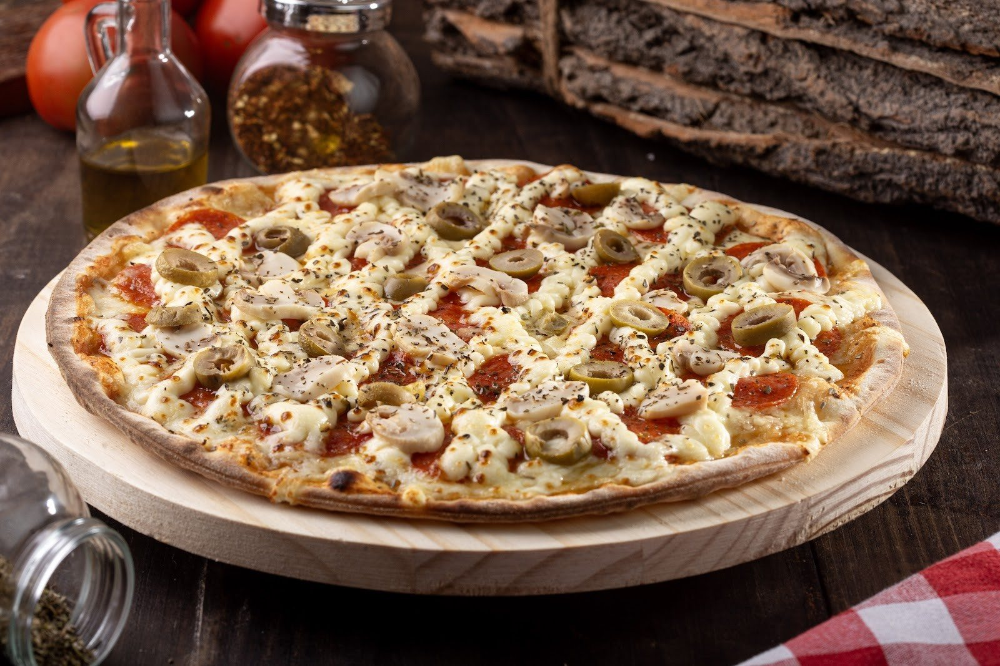

Início · Retirada no balcão
Retirada no balcão, no Stiep
Quem mora perto pode pedir e buscar: a loja on-line estima cerca de 30 minutos para a pizza ficar pronta.
Endereço
R. Xingu, 180 · Stiep
Na ficha do Google, o endereço é R. Xingu, 180, Stiep, Salvador (CEP 41770-130). A loja on-line da casa lista o mesmo número 180, na Av. Professor Manoel Ribeiro, Armação. Na dúvida, confirme o ponto pelo WhatsApp.

Horário
Das 16h às 23h
É o horário de delivery e balcão na loja on-line da casa, de segunda a domingo. Na ficha do Google, a segunda começa às 16h30.
Como funciona
Peça, aguarde, busque
- Monte o pedidoNo site, com a sacola.
- Escolha retiradaDiga na conversa que vai buscar.
- Busque no balcãoCerca de 30 minutos depois, segundo a loja.
Mapa
Abra a rota
Dúvidas frequentes
Perguntas comuns
Dá para comer no local?
A casa se apresenta como pizzaria delivery. Para saber de mesas, pergunte no WhatsApp.
Posso pagar na retirada?
Sim: dinheiro, débito ou crédito, além de Pix.
Hoje é dia de pizza
Se o universo mandou o sinal, quem somos nós para ignorar?
A frase é do Instagram da casa. Monte a pizza, escolha a borda e mande o pedido pronto para o WhatsApp da Dona Pizza.